Riemann for Anti-Dummies Part 60
THE POWER TO CHANGE, CHANGE
New ideas, like people, come into this world naked. To effectively perform their mission, they must be provided with clothes. But unlike children who can speak for themselves, ideas must be dressed in words and images which, upon careful reflection, indicate how they were conceived. And though it would be a grave error to mistake a person's substance for his or her outward appearance, the spirit of an idea (which also cannot be captured by a superficial account of its form) can, nevertheless, be evoked by that form's animation. Yet there are those for whom the generation of such thoughts had seemed impossible, and to whom the very existence of such creations signifies a power they had denied could be. They focus only on the form, gossiping about its appearance, chiding its unconventionality or smothering it with an effusive description of its external features.
The history of science is replete with examples of such new creatures, which have been defended from such sophistries by their authors' careful constructions: Archytas's solution for the doubling of the cube, or Gauss's complex surfaces, to name but two of those reviewed in previous installments of this series. Though such constructions arise as the unexpected solutions to specific problems, they embody the powerful new thoughts which made such solutions possible. Thus, their recreation evokes that more general principle, which, though forever connected to its origins, emerges as a new universal idea, and gains for all time, a universal increase in the cognitive power of man.
Now we turn our attention to another such creation, previously mentioned, but not yet adequately developed in this forum: the hypothesis which lies at the foundations of Riemann's surface.
Riemann first presented to the world his new idea in his doctoral dissertation of 1851, and elaborated its implications in his 1854 habilitation lecture, his 1857 treatises on Abelian and hypergeometric functions, and his posthumously published philosophical fragments. From all these sources, and the historical context in which they were produced, we can reconstruct Riemann's new idea as the solution to the unresolved physical paradoxes brought to the fore by C.F. Gauss's extension of Leibniz's calculus into the complex domain.
But from this exercise we acquire much more. As we form Riemann's surfaces in our mind as images, we begin to recognize the quality of mind which produced this solution, and a more universal thought takes shape as well. From this point forward these images evoke in our minds that universal thought. Thus, we can bring Riemann's creation to life, not simply as a solution to a formal mathematical problem, as its outward appearance is most frequently portrayed, but as an expression of an epistemological concept that has revolutionized human thinking.
What is a Surface?
When Riemann and Gauss speak of surfaces, they do not mean visible objects embedded in a linearly-extended Euclidean-type space. Rather, they speak of what Riemann identified in his 1854 habilitation paper as "multiply-extended continuous manifolds." Such manifolds are not defined by a set of a priori axiomatic assumptions, but are concepts arising from an investigation of physical action determined by universal physical principles.
"In a concept whose various modes of determination form a continuous manifold, if one passes in a definite way from one mode of determination to another, the modes of determination which are traversed constitute a simply extended manifold and its essential mark is this, that in it, a continuous progress is possible from any point only in two directions, forward and backward. If now one forms the thought of this manifold again passing over into another entirely different, here again in a definite way, that is, in such a way that every point goes over into a definite point of the other, then will all the modes of determination thus obtained form a doubly extended manifold. In similar procedure one obtains a triply extended manifold when one represents to oneself that a double extension passes over in a definite way into one entirely different, and it is easy to see how one can prolong this construction indefinitely. If one considers his object of thought as variable instead of regarding the concept as determinable, then this construction can be characterized as a synthesis of a variability of "n + 1" dimensions out of a variability of "n" dimensions and a variability of one dimension." (Riemann's Habilitation Lecture)
Before continuing with this more general investigation of multiply extended manifolds, let us take as an example, the specific cases of the catenary and the catenoid.
As was illustrated in the last installment of this series, Leibniz, through his infinitesimal differential calculus, created a means to express physical action as the intended effect of a universal physical principle that is acting, universally, but differently, at every infinitesimal interval of time and space. In the case of the catenary, this is expressed by the fact that the visible shape of the catenary is determined by the changing effect of the physical principle of least-action on a chain supporting its own weight. Though this effect is different at each point along the catenary curve, these differences are determined by that general principle which integrates them so as to produce a physically stable chain.
Now, compare this case with that of the surface of a catenoid, formed, for example, by a soap film suspended between two circular hoops. (See Figure 1.)
Figure 1 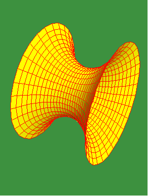 |
Here the soap film is suspended between the hoops along catenary curves, but this family of catenaries are themselves integrated, along circular pathways, into a surface. Thus, like the catenary, the visible shape of the catenoid is determined by the changing effect of the physical principle of least action, but instead of those changes varying only along one curve, as in the case of the catenary, those differences occur within a rotational manifold of catenary curves. Therefore, the general principle that determines the stable shape of the soap film is expressed as the integrated effect that unites these two distinct but connected types of differences under one, higher principle.
From the standpoint of Riemann's habilitation lecture cited above, the catenary comes under his concept of a simply extended manifold, whereas, the catenoid is a type of doubly extended manifold. Using Leibniz's calculus, the changing effect of least-action can be expressed geometrically, by a type of animation called a differential equation. In the case of a simply extended manifold, the changing effect of least action is expressed as the changing curvature of a curve, and for a doubly extended manifold, the changing curvature of a surface. Thus, in both cases, the visible form of the action is expressed as a function of the changing effect of the universal principle of least action.
It must be underscored that in both cases, the visible shape of the curve or the surface is the effect of the characteristic {physical} "modes of determination" of the manifold. These modes of determination are not visible, but they are faithfully reflected in the visible effects. The challenge for science is to be able to measure these effects, and from their variations in the infinitesimally small, determine the principles that integrate them into a unified extended manifold of action.
As Riemann stated in his lecture notes On Partial Differential Equations and their Applications to Physical Problems:
"What has been shown to be a fact by induction, that differential equations form the actual foundation of mathematical physics, can also be shown a priori. True elementary laws can operate only in the infinitely small, and apply to points in space and time. But such laws are in general partial differential equations, and the derivation of laws for extended bodies and time periods requires their integration. Thus we need methods for deriving from laws in the infinitely small such laws in the finite, and, more precisely, derived with complete rigor, without permitting oneself omissions. Because it is only then that we can test them by way of experience."
Riemann was basing his work in this regard on the previous achievements of Gauss, specifically, Gauss's treatises on curved surfaces, conformal mapping and potential theory, some of which has been discussed in previous installments of this series and some of which will be discussed in future pedagogicals. For purposes of illustrating the concepts essential for this discussion, we return to the case of the catenoid.
Like the catenary, the catenoid is able to maintain its stable shape, because the tension exerted at every point is equalized by the changing effect of the principle of least action. Or, inversely, the shape of the catenary is the unique form which equalizes the tension exerted along the chain, by the effort of the chain to support its weight under the effect of gravity. But, unlike in the catenary where the tension is exerted back and forth along a curve, in the catenoid, the tension is exerted in an infinite number of directions radiating out from every point.
This changing effect that produces equal tension can be expressed, geometrically, by the changing curvature of the catenary curve, that same effect can be expressed, for the catenoid, by the changing curvature of the surface. But here the problem becomes more difficult, because the curvature of the curves within the surface is always different, depending on the curve's direction.
Gauss solved this problem by defining several ways to measure the curvature of a surface. He recognized that at every point on any surface, though there be an infinite number of curves radiating along the surface from that point, one of them was the most curved and one of them was the least, and that these curves were always perpendicular to each other. (See Figure 2.)
Figure 2 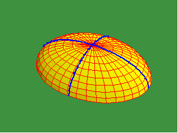 |
Gauss measured the curvature of these curves, after Leibniz, by the size of the osculating circles to the curves at that point. (See Figure 3.)
Figure 3 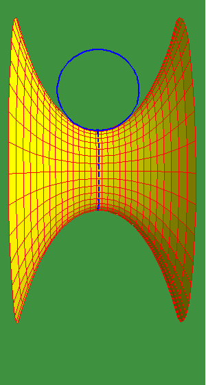 |
Since the larger the osculating circle, the smaller the curvature, and vice versa, Gauss defined the measure of curvature at each point, as the inverse of the product of the radii of the extreme osculating circles. The characteristic curvature of a surface could thus be expressed by how this measure of curvature changed over the extent of the surface.
Riemann's Surfaces
Whereas the catenoid is exemplary of a type of surface determined by a physical principle, such surfaces, in most cases, do not necessarily manifest a visible form. Nevertheless, a non- visible, but physical form can be clearly defined, as Riemann indicates, by generalizing the idea of a surface, to a concept of a multiply-extended manifold of physical action. From this concept of a physical manifold, a visible, geometrical form can be constructed, that faithfully reflects the characteristics of the physical manifold. For example, the surface of the Earth, as Gauss understood it, is the physical manifold that is everywhere perpendicular to the pull of gravity. This doubly extended manifold is measured by the changing effect that gravity has on the direction of a plumb bob. This surface, while not directly visible, is nevertheless physically determined, and thus, defines a physical geometric thought object, whose characteristics reflect the principles of physical action of gravity. Another example investigated by Gauss, is the physical manifold of the Earth's magnetic effect, which, as a triply-extended manifold, is measured by the changing directions of a compass needle at different positions on the Earth. Here, too, the surface is not visible, but is, nevertheless, a physically determined surface.
Gauss called these types of non-visible physical surfaces "potential" surfaces, because they express the potential for action of a physical principle. These manifolds do not express what is {visible}. Rather they express what is {possible}, with respect to the physical constraints imposed by a universal physical principle on the manifold of action, just as the physical principle of least action imposes a certain characteristic curvature on a hanging chain or soap film. Thus, when investigating any physical process, it is necessary to form a concept of the manifold of physical principles in which that process is occurring. These principles impose a characteristic potential for action, which, Leibniz, Gauss and Riemann showed, can be expressed, geometrically as a characteristic curvature of the manifold. (Riemann's Dirichlet Principle Riemann for Anti- Dummies Part 58.)
Following Gauss, Riemann recognized that in the type of least action physical manifold exemplified by the catenoid or Gauss's potential surfaces, the curves of maximum and minimum curvature are harmonically related, which means that their mutual curvatures change at the same rate, in perpendicular directions. For example, in the catenoid, the size of the osculating circles of maximum curvature and minimum curvature increase or decrease at the same rate when moving from place to place on the surface.
It should again be emphasized, that this harmonic relationship is an effect, not a cause. The principle of least action is the cause, which, in the visible domain is reflected in this harmonic relationship.
Gauss had recognized in his Copenhagen Prize Essay, that this harmonic relationship, between the curves of maximum and minimum curvatures of a surface, is a characteristic of functions in the complex domain. Gauss applied this discovery by showing that the problem of mapping one surface onto another, so that all angular relationships are preserved, could be solved by finding a complex function that transformed one set of harmonically related curves into another.
Riemann extended Gauss's idea by showing that from such complex functions, an entire class of physical manifolds can be expressed, whose "harmony would otherwise have remained hidden." For Riemann, complex functions were a means to express a transformation from one physical manifold into another, as an effect of changing the curvature of the manifold's determining characteristics. Further, as we will soon see from the implications of the essential features of Riemann's surfaces, Riemann's generalization of Gauss enabled him to express a new type of physical transformation, in which the potential for action is not simply transformed, but is increased in power.
Or, in other words, Riemann's complex functions could express the power to change, change.
To pedagogically illustrate Riemann's idea we will first introduce it, clothed in the words and images of geometry. From there, its more universal implications can more easily be brought to light.
This is a method similar to that used in investigating Archytas's solution for doubling the cube or Gauss's solutions to the fundamental theorem of algebra. In both cases the requirements of a specific geometric solution reveal that the original paradox was ontological, not mathematical, as it had first been presented. For example, the fact that in order to double the cube, Archytas had to produce the multiply connected manifold of physical action that generates, in a single act, the torus, cylinder and cone, demonstrates that the principle that generates the cube is outside the apparently spherical boundary of visible space.
Similarly, as Gauss showed in his proof of the fundamental theorem of algebra, the apparent mathematical paradox of the √-1, was, in reality, not a problem of algebra, but a problem of algebraists, who were fixated on a false conception of the physical universe. As Gauss noted, the paradox of the √-1, is not a formal mathematical one, even though it may have appeared in that form. Rather these paradoxes actually reflect "the deepest questions of the metaphysics of space", as Gauss himself said.
Riemann exploited one such mathematical paradox to force to the surface his new conception concerning manifolds of physical action.
That paradox arises , in its geometrical context, when investigating complex functions represented, as Gauss did in his Copenhagen Prize Essay, as conformal transformations of one surface onto another. In some cases, these mappings are quite straightforward, such as the stereographic projection of a sphere onto a plane, or the conformal mapping of the spheroidal shape of the Earth onto a sphere. In these cases, there is a one to one correspondence between every point of one surface and every point of the other.
However, in some complex functions (most emphatically, all those transcendental functions that correspond to physical action), this one to one relationship does not occur. For example, the complex squaring function, maps the points of one surface onto another twice. Or, in the case of a complex cubic function, the points of one surface are mapped onto another three times.
This can be illustrated with an animation (See Figure 4a.) representing a complex cubing function.
Figure 4a 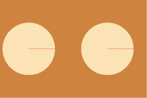 |
Since the complex cubing function triples the angle of rotation, a 120 degree rotation of the surface of the circular disk on the left maps to a full rotation of the surface of the circular disk on the right. Likewise, the second 120 degree rotation of the surface of the circular disk on the left also maps to a full rotation of the circular disk on the right. So to with the third 120 degree rotation. Thus, each point of the disk on the right, corresponds to three points on the disk on the left. This inversion can be seen more clearly in Figure 4b which maps the disk on the left as a function of the action of the disk on the right.
Figure 4b 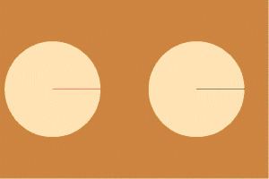 |
Thus, there appears to be a mathematical ambiguity because one clearly defined action produces three distinct effects, and there is no formal algebraic way to distinguish one of these effects from the other. However, as Gauss did in the fundamental theorem of algebra, Riemann, applying Leibniz's method of analysis situs found a physical geometrical form, which uniquely characterized the quality of physical action, that underlies such multi-valued complex functions.
He rejected the method of Cauchy, who sought to define an algebraic calculation to distinguish one effect from the other. Instead, Riemann focused on the unique points of the mapping that were not multi-valued the singularities. As Gauss did in his solution to the fundamental theorem of algebra, Riemann created a construction whose geometric characteristics expressed the organizing principle of the manifold by the relationship between what the singularity and everything else in the manifold.
To visualize Riemann's idea, we can use the above example of a cubic function. For such a function, Riemann conceived of each of the three different effects produced by the cubic rotation, to be different branches of one action. He represented each as a different layer on a surface of three sheets. These layers were connected to each other at the point of singularity, where their values all coincided. He called this point a branch point. (See Figure 5.)
Figure 5 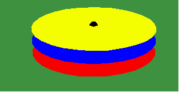 |
Thus, in our example, the effect of the first 120 degree rotations are spread over the first layer, the effect of the second 120 degree rotation is spread over the second layer, and the effect of the third 120 degree rotation is spread over the third layer. But since the action is continuous so must be the effects. To express this, Riemann connected these layers to each other by making a cut emanating outward from the branch point, which he called a branch cut. Along this cut, he connected the first layer to the second, the second to the third and the third back to the first. (See Figure 6.)
Figure 6 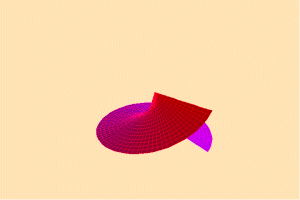 |
In this way, Riemann expresses a physical relationship in which a single continuous action that produces a multiplicity of effects are integrated into one continuous manifold.
It is important to underscore, that though we can create a vivid image in our mind of Riemann's surface, it is impossible to physically construct it in visible space. Nevertheless, Riemann's imagined surface, because it reflects an ontological principle of action, produces a very real effect. From it we can gain a greater insight into the relationship between a manifold of universal physical principles and their physical effects.
The ontological implications of Riemann's surfaces begin to shine through if we investigate a slightly more complicated example. The next set of animations illustrate Riemann's surface for a fourth power algebraic function, which produces a Riemann's surface with four layers. The sets of perpendicular lines on the left and quartic curves on the right represent the effect of the transformation on the manifold's harmonically related curves of maximum and minimum curvature.
In the first animation, these four roots are represented by four colored dots, that are shifted, in Riemann's surface to lie on top of each other at the branch point. (See Figure 7.)
Figure 7 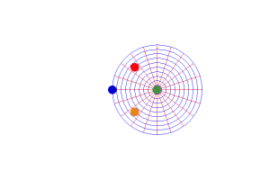 |
Now, think of this Riemann's surface as a type of manifold of physical action, and investigate the effect of this transformation on different actions. In Figure 8a we see the effect within this manifold on a circular rotation around one of the roots.
Figure 8a 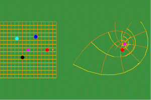 |
The original action is depicted in the left panel and its effect is depicted on the right. In Figure 8b, we see the same action depicted from a side view of Riemann's surface, showing that the pathway loops around the one layer containing the root and then continuing, without looping through the rest of the layers.
Figure 8b 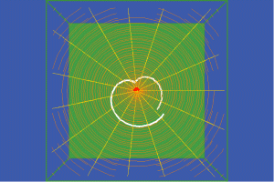 |
In Figure 8b we see top down view of 9b. Compare this with the result in 8a.
In Figures 9a, 9b, and 9c we see a similar representation of the same type of action but around a different singularity, and with a similar effect.
Figure 9a 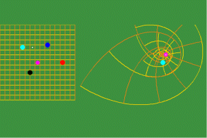 |
Figure 9b 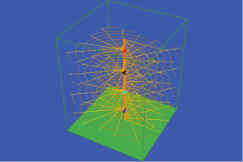 |
Figure 9c 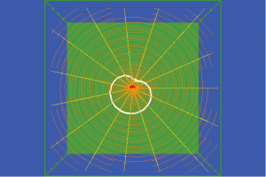 |
In Figures 10a, 10b, 10c we see the effect on a closed pathway that encompasses no singularities.
Figure 10a 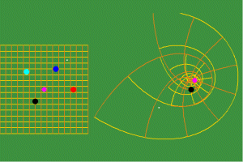 |
Figure 10b 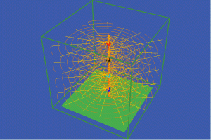 |
Figure 10c 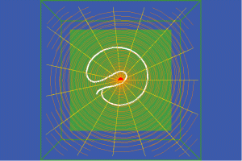 |
But, in Figures 11a 11b, and 11c we see a simple closed pathway that circles two singularities.
Figure 11a 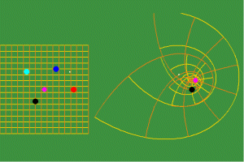 |
Figure 11b |
Figure 11c 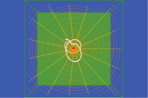 |
Here the effect of the transformation is to produce a double loop around the branch point. Thus, within this type of manifold, an action that encompasses a greater number of singularities produces a greater effect. In other words, Riemann's surface expresses a type of multiply extended continuous manifold in which the power of any action is a function of the number of singularities encompassed by that action.
In Figures 12a, 12b, 12c we see this power is increased once again when the pathway of action encompasses three singularities.
Figure 12a 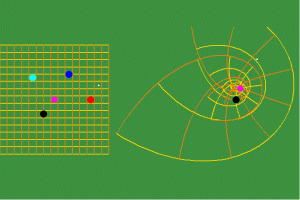 |
Figure 12b 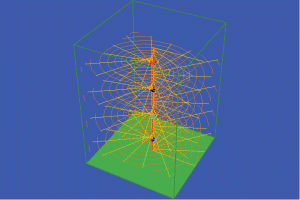 |
Figure 12c 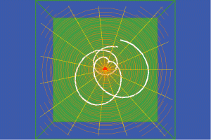 |
And, in Figures 13a, 13b, 13c, a further increase in power is represented by a loop around 4 singularities which is transformed into a quadruple loop around the branch point.
Figure 13a 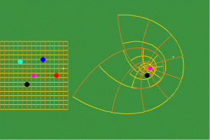 |
Figure 13b 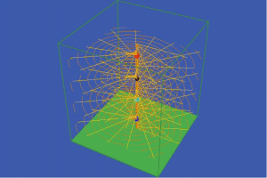 |
Figure 13c 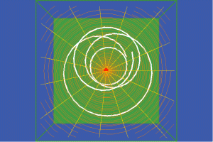 |
Here we have reached the limit of the power of this particular type of complex function. To increase the function's power, a new principle must be introduced, which will add a new singularity to the manifold of physical action. With the incorporation of this new singularity, into the manifold, a greater potential for action is achieved.
This defines a still higher type of transformation, one that adds new singularities to the manifold of action. But in these algebraic examples, these singularities are added one by one. Riemann showed, than Abel's extended class of higher transcendental functions, when expressed on Riemann's surface, express a type of transformation that increases the rate and the density at which singularities can be added.
This part of the investigation will have to be continued until next time. But, at least we have begun to scratch the surface.
{kind=link}
{kind=link}
{kind=link}
{kind=link}
{kind=link}
{kind=link}
{kind=link}
{kind=link}
{kind=link}
{kind=link}
{kind=link}
{kind=link}
{kind=link}
{kind=link}
{kind=link}
{kind=link}
{kind=link}
{kind=link}
{kind=link}
{kind=link}
{kind=link}
{kind=link}
{kind=link}
{kind=link}
{kind=link}